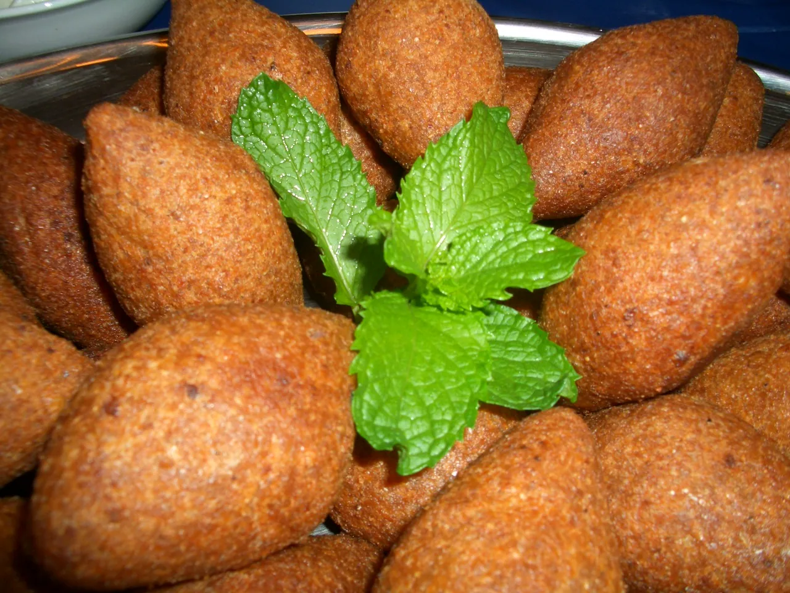
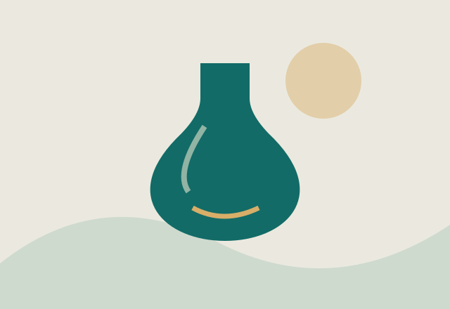
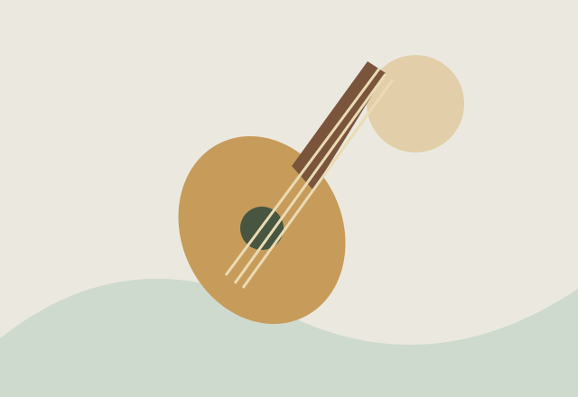

تراث وعمارة
دمشق
أزقة المدينة القديمة، أسواقها المسقوفة وبيوتها ذات الأفنية: في دمشق تتجاور طبقات التاريخ والحياة اليومية.

مكان واحد. حكايات لا تنتهي.
من أزقة دمشق إلى ضفاف الفرات، ومن نكهة البيت إلى إيقاع الدبكة. اقترب من الأماكن والحكايات التي تجعل سوريا، سوريا.
أماكن لها روح
تعرّف إلى وجوه مختلفة من سوريا، حكاية تلو الأخرى.
تراث وعمارة
أزقة المدينة القديمة، أسواقها المسقوفة وبيوتها ذات الأفنية: في دمشق تتجاور طبقات التاريخ والحياة اليومية.



الكبةعلى المائدة السورية
وصفات تتناقلها الأجيال، وتعيد كل عائلة حكايتها بطريقتها. اكتشف الأطباق، مكوناتها وحكاياتها.
تراث يعيش بيننا
في يد الصانع، وخطوة الدبكة، وقصة تُروى حول المائدة. تعرّف إلى الثقافة من تفاصيلها اليومية.


استراحة للفضول
خمسة أسئلة، وحكاية جديدة مع كل إجابة. جرّب تحدياً، وتعلّم شيئاً صغيراً.
النواعير ترفع ماء العاصي بقوة جريانه.
اكتشف سوريافي بصرى، يمنح البازلت الداكن العمارة طابعها المميز.
اكتشف سورياالزجاج المنفوخ حرفة تنتقل بالممارسة داخل الورش.
ثقافة وحكايات